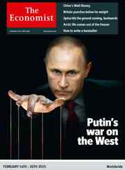

< < < Back
Why Vladimir Putin May Be The Last Guardian Of Traditional Values – Return Of Kings
Unless you’ve been living under a rock, you heard about one of the biggest events of the last couple of years, the Ukrainian “revolution,” called Maidan. The result was the toppling of a democratically elected president, and the switch from a Russian-backed to a Western-backed government. As someone who was born in Ukraine, I was immensely impacted by the tumultuous events.
In order to better understand what exactly happened, it’s important to look at the broader context. One of the things that’s happening is that the world is becoming increasingly liberal. In Europe, country after country is being swallowed by the aggressively expanding European Union. After former Soviet Union republics (Estonia, Lithuania and Latvia) joined the EU, it was just a matter of time before Ukraine would be next.
The one that stands alone
Ukraine, however, is a unique case. While many of the former Soviet republics are rabidly anti-Russian (e.g., Estonia and Lithuania), Ukraine has always been split 50/50 between Russian speakers who align with Russia and Ukrainian speakers who favor the West. If you don’t believe me, see the results of Ukraine’s previous presidential elections which have always been split down the middle.
Last year I spent a summer in St. Petersburg, Russia. Right now, I’m writing this from Kiev, Ukraine. If you’ve ever been to both countries, you know that they traditionally have always had very strong traditional genders. The guys are tough as nails and the women exude strong femininity. It’s the complete opposite of the circus—and circus is exactly what it is—that you see in the liberal North American cities such as San Francisco or Toronto. After living in America for many years, returning to Russia and Ukraine has always been a pleasant experience.
However, after the change of government, Ukraine is now firmly in the Western hands. Things are changing in Ukraine and not for the better. There’s a loosening of traditional family values, introduction of gay parades (the first one lasted only half an hour), increased agitation by liberal SJW’s who are recording “atrocities” against gays and posting them all over the Internet.
The frontier between East and West—between traditional family values and “anything goes”—has been pushed further East, from the Ukrainian-EU border to the Russian-Ukrainian border. I don’t believe I have to explain to you what kind of goodies are introduced with Western “values”: it’s a cornucopia of things that we’re all perfectly aware of: feminism, shaming of sexes, “social justice” and, of course, the emasculation of men.
The question is: why is Ukraine being overrun by Western values, while Russia is firmly resisting this poisonous onslaught? The answer: Vladimir Putin. Russia’s president has said enough is enough. He doesn’t want Western “values” to infiltrate his country. He wants Russia to remain Russian.

Not surprisingly, there has been very strong worldwide campaign to discredit Vladimir Putin. Leaders of the Russian opposition are constantly meeting—plotting an overthrow?—with US embassy employees. Not to mention that every single Western newspaper or magazine has been comparing Putin to Hitler, and claiming that he wants to launch WWIII.

Why is this happening? It’s obvious that the West doesn’t want a strong leader who provides a rule of law for his people. This is not even a war of West against Russia; or a war of Ukrainian-speaking people vs. Russian-speaking people—it’s a war of ideologies. It’s a culture war. A war between traditional values coupled with strong gender polarities, strong masculinity and strong femininity on one side and liberals, SJW’s, feminists, and other wackos on the side that wants to demolish the existing model and create their own world order.
When you look around the globe, can you name another strong leader? A strong leader that stands for his own country and people? Take a moment, I can wait. Still thinking? Give up?
Do you know why you’re stuck? Because there aren’t any other strong leaders left besides President Putin. Do you think it’s a mere coincidence that with strong leaders come strong traditional values and gender roles? Don’t be so naive. As long as there are strong leader like Putin at the helm, you won’t have crazy wackos like SJW’s running around and shoving their half-backed propaganda down the throats of gullible citizens. Strong leaders don’t let that happen.
For example, here’s what happened in Belgrade, Serbia when EU forced a traditional, Christian orthodox country to hold its first ever gay parade:

This is not meant to endorse violence, but rather to show the level of opposition to leftism that exists on the ground but is being ignored by world leaders. We think that traditional gender roles will somehow magically return by some miracle from God. We think that all we need is to make a wish to the tooth fairy before going to bed. But that’s not exactly how the real world works.
Femininity and masculinity don’t just exist because you want them: they exist only when there’s order and stability. Real order, not the chaos that we have in the West.
And who do you think provides that order and stability? A strong leader, that’s who. As soon as you give people too much freedom, people will take that freedom and destroy everything that the man has painstakingly built, resulting in chaos and confusion; they’ll create strange ideologies that promote unjustified shaming and reverse discrimination in the name of “tolerance” and “equality.”
Call me old school, but I respect strong family values. I like when things stay normal. I’m a man, and I want to be respected as a man. Is respect really too much to ask for? I like when there’s a strong masculinity counterbalanced by strong femininity. That’s what fueled our civilization for hundreds and even thousands of years. That’s how we’re wired biologically.
I like when people are left alone and no one is feeding them propaganda replete with lies. I don’t want the world be infused by morally corrupt liberal values. But we need strong leaders to make that happen.
The Russian people are very fortunate to have such a strong leader who’s acting in the best interest of his countrymen. It’s clearly not the case for the rest of us. If you like this article and are concerned about the future of the Western world, check out Roosh's book Free Speech Isn't Free. It gives an inside look to how the globalist establishment is attempting to marginalize masculine men with a leftist agenda that promotes censorship, feminism, and sterility. It also shares key knowledge and tools that you can use to defend yourself against social justice attacks. Click here to learn more about the book. Your support will help maintain our operation.
If you like this article and are concerned about the future of the Western world, check out Roosh's book Free Speech Isn't Free. It gives an inside look to how the globalist establishment is attempting to marginalize masculine men with a leftist agenda that promotes censorship, feminism, and sterility. It also shares key knowledge and tools that you can use to defend yourself against social justice attacks. Click here to learn more about the book. Your support will help maintain our operation.
Read Next: Ever Wonder What Kind Of Man Becomes A Russian Alpha?


{kind=link}